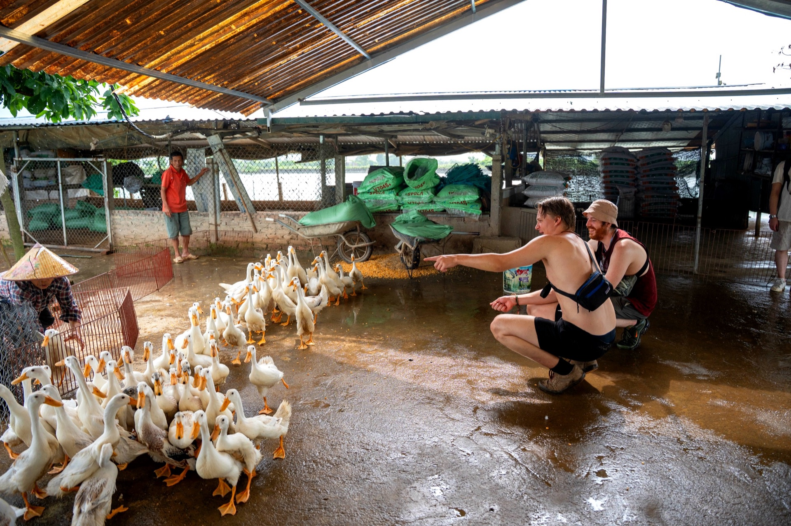
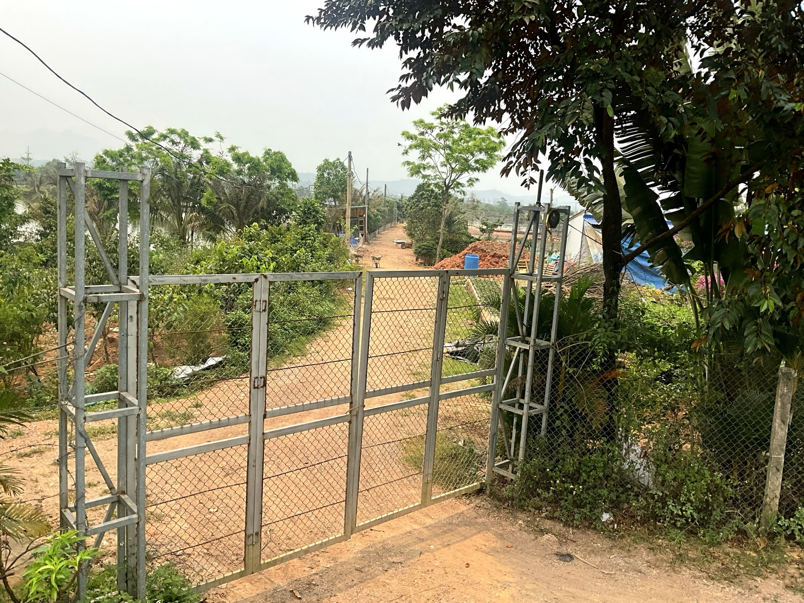
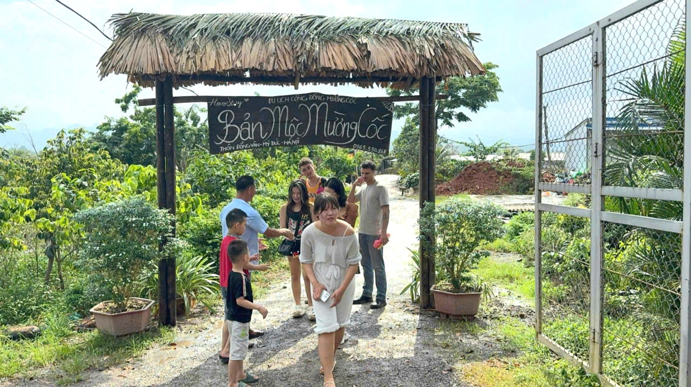

Loại hìnhTypeType
Trải nghiệm nông nghiệpAgricultural experiencesExpériences agricoles

Bản Mộc Mường Cốc là điểm trải nghiệm mang đậm hồn cốt của làng Mường ven ao, với ngôi nhà sàn cổ truyền thống soi bóng xuống mặt ao (ao 79) in đầy sen và vịt bơi lội. Chủ nhà Nguyễn Văn Vương giữ gìn không gian này trong nếp sống nguyên vẹn: chuồng vịt ven bờ, đầm sen mùa hạ ngan ngát, cá dưới ao lâu năm đã quen hơi người.
Điểm đến gợi lên không gian vùng đất ẩm đặc trưng của xứ Mường – nơi đời sống gắn liền với ao hồ, ruộng lúa và hệ sinh thái thủy sinh phong phú. Du khách được trải nghiệm nghề ngư nghiệp Mường dân dã – từ cho cá ăn, quan sát đàn vịt đến tìm hiểu cách người Mường khai thác và gìn giữ nguồn nước từ đời này sang đời khác.
Kiến trúc nhà sàn cổ tại đây là điểm nhấn văn hóa, phản ánh lối cư trú truyền thống người Mường với mái lá và sàn gỗ đã thấm đậm thời gian.
Ban Moc Muong Coc embodies the very soul of a Muong village by the pond, featuring a traditional stilt house reflecting onto the tranquil pond (pond 79) adorned with lotus flowers and swimming ducks. Host Nguyen Van Vuong preserves this space in its authentic lifestyle: duck coops by the bank, fragrant lotus ponds in summer, and ancient fish in the pond accustomed to human presence.
This destination evokes the distinctive wetland landscape of the Muong region, where life is intertwined with ponds, rice fields, and a rich aquatic ecosystem. Visitors can experience rustic Muong fishing traditions – from feeding fish and observing ducks to learning how the Muong people harness and preserve water sources across generations.
The ancient stilt house architecture here is a cultural highlight, reflecting the traditional Muong way of life with thatched roofs and wooden floors steeped in time.
Bản Mộc Mường Cốc est une expérience imprégnée de l'âme du village Mường au bord de l'étang, avec une ancienne maison sur pilotis traditionnelle se reflétant sur la surface de l'étang (ao 79) rempli de lotus et de canards nageant. Le propriétaire Nguyễn Văn Vương préserve cet espace dans son mode de vie intact : des étables à canards au bord, des étangs de lotus parfumés en été, et des poissons anciens dans l'étang habitués à la présence humaine.
Cette destination évoque l'espace caractéristique des zones humides du pays Mường – où la vie est liée aux étangs, aux rizières et à un riche écosystème aquatique. Les visiteurs peuvent découvrir la pêche artisanale Mường – de l'alimentation des poissons à l'observation des canards, en passant par la compréhension de la manière dont les Mường exploitent et préservent les ressources en eau de génération en génération.
L'architecture des maisons sur pilotis anciennes est un point fort culturel, reflétant le mode de vie traditionnel Muong avec des toits de chaume et des planchers en bois imprégnés par le temps.
| Tham quan nhà sàn cổExplore the ancient stilt house.Visite de l'ancienne maison sur pilotis. | Tìm hiểu kiến trúc và lối sinh hoạt người MườngDiscover Muong architecture and way of life.Explorez l'architecture et le mode de vie Muong. |
| Trải nghiệm ao cá – cho cá ănExperience the fish pond – feed the fishDécouvrez l'étang aux poissons – nourrissez les poissons | Tương tác trực tiếp với đàn cá ao 79Interact directly with the fish in Pond 79Interagissez directement avec les poissons de l'étang 79 |
| Quan sát và tìm hiểu chăn nuôi vịtObserve and learn about duck farmingObserver et découvrir l'élevage de canards | Tìm hiểu chăn nuôi gia cầm ven ao truyền thốngLearn about traditional pond-side poultry farming.Découvrez l'élevage traditionnel de volailles au bord de l'étang. |
| Tham quan đầm senExplore the Lotus PondDécouverte de l'Étang aux Lotus | Ngắm sen mùa hoa, chụp ảnh thiên nhiênAdmire lotus flowers in bloom and capture nature photos.Admirez les fleurs de lotus en saison et prenez des photos de la nature. |
| Giao lưu đời sống bản địaEngage with local lifeÉchangez avec la vie locale | Trò chuyện và tìm hiểu ngư nghiệp người MườngChat and learn about Muong fishing practices.Échanger et découvrir la pêche traditionnelle Muong. |
| Ẩm thực địa phươngAuthentic Local FlavorsSaveurs locales authentiques | Phục vụ theo đặt trướcServed by prior reservationService sur réservation préalable |


Bản Mộc Mường Cốc hướng tới trở thành điểm trải nghiệm ngư nghiệp – thiên nhiên đặc trưng của vùng đất ẩm Mường Cốc, nơi du khách được sống chậm bên ao sen và ngôi nhà sàn cổ. Gia đình mong muốn mở rộng trải nghiệm câu cá theo đặt trước và phát triển thêm hoạt động chụp ảnh nghệ thuật trên đầm sen phục vụ khách yêu cảnh quan thiên nhiên. Điểm đến Du lịch cộng đồng Mường Cốc, Xã Mỹ Đức – Thành phố Hà NộiBan Moc Muong Coc aims to become a characteristic fishing and nature experience in the wetlands of Muong Coc, where visitors can slow down by the lotus pond and ancient stilt house. The family wishes to expand pre-booked fishing experiences and further develop artistic photography activities on the lotus pond for guests who love natural landscapes. Muong Coc Community-Based Tourism Destination, My Duc Commune – Hanoi City.Bản Mộc Mường Cốc aspire à devenir un point d'expérience caractéristique de la pêche et de la nature dans les zones humides de Mường Cốc, où les visiteurs peuvent ralentir le rythme au bord de l'étang de lotus et de l'ancienne maison sur pilotis. La famille souhaite étendre les expériences de pêche sur réservation et développer davantage d'activités de photographie artistique sur l'étang de lotus pour les clients amoureux des paysages naturels. Destination de Tourisme Communautaire Mường Cốc, Commune de Mỹ Đức – Ville de Hà Nội.